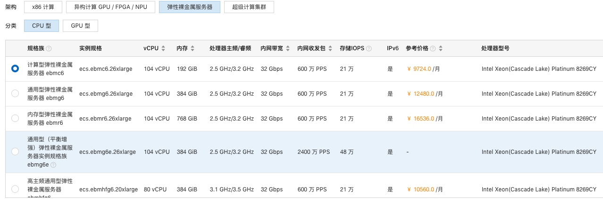
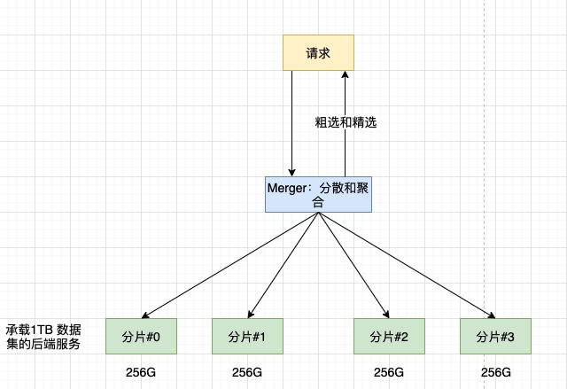
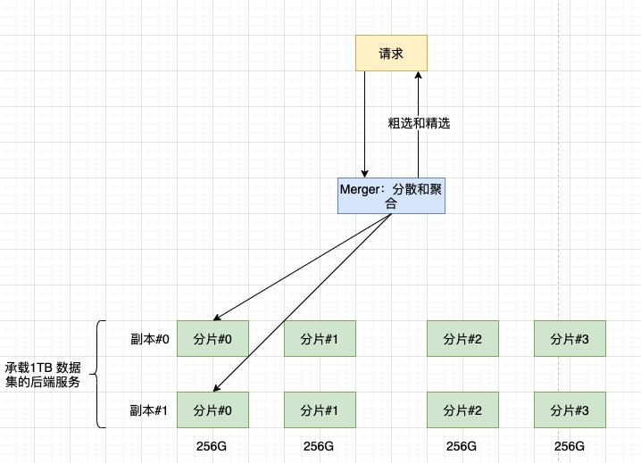

记录我在一线互联网大厂实现大型有状态服务在 K8s 集群的落地实践。总计持续 2 年时间，其中包括：
- 开发有状态服务框架（第一版）。
- 实现业务服务（搜索，广告，推荐，存储）迁移到 K8s 集群的过程。
- 总结瓶颈，更新有状态服务框架（第二版）。
- 实现已迁服务的平滑迁移，迎接更高要求服务的检验。
该项目中解决功能需求是十分普遍的，难度也基本上达到了大厂里有状态服务的要求，对一般的有状态服务也有足够的参考意义，特别是其中一些做法也是很有想法的，也受到了同行的认可。
在开始之前，我们已经假设选择了容器化编排服务 Kubernetes，至于为什么选择从物理机/虚拟器迁移到 Kubernetes，这里就不展开了。
那么，我们先从场景开始描述。
抽象出通用的需求场景
我们以大型电商背后的搜索业务为需求方，我们从其中抽象出一些通用的功能需求，目的是能将这套方案落地到更宽广的范围。
大数据集
大型电商的搜索服务依靠庞大的数据集（TB 级别）。同时为了减少后端服务的响应时延，服务优先将数据的查询集到内存操作，而避免对磁盘/云盘的读写操作。疑问#1：如何将大数据集映射到内存中，或者替代方法？
根据当前硬件水平，阿里云已经支持 768G 内存的裸金属服务器，如下：

2 年前的时候，当时能接触到最好的机器规格是 256G，同时，商品数据的规模每天都在增加（因为市场上的商品与日俱增）。一个好的框架是可以水平扩展的，不应该被硬件水平所局限。
互联网有个思想：分治。我们也是从这个思路触发，请求处理图如下：

通过上图，我们简化了一下模型，业务请求试图访问 1TB 的数据集，返回满足条件的商品信息。
数据分片：因为 1TB 数据无法用单台机器承载（内存层面），我们先将数据集分成不同的 4 片，并加载到相应的机器上。
请求分治：将单个请求分拆成 4 个，然后将 4 个请求结果 merge 后再返回前端。
该思路不但解决了大数据集加载的问题，更减少了请求处理的时延（平均时延为原来的 1/4）。
水平扩展
高并发，大流量的请求，可能对后端实例带来巨大压力，甚至导致实例奔溃。疑问#2：存在水平扩展方案吗？

以分片#0为例，我们可以构建出地位对等的实例（分片#0的副本#0 和 分片#0的副本#1），作为后端承载点，均分流量。
好在这个场景里，各个分片数据的请求量是同步增加或缩减的，因此我们水平扩缩的对象实际上是一个完整的数据集服务（如上图里的一行实例）。
快速起停+弹性部署
接着上面的水平扩容，接下来就是疑问#3：如何快速的扩缩，升级？
我们的应对方法是容器化编排（Kubernetes），将资源池化，自动化管理资源的整合和调度。后面会基于 Kubernetes CRD（Custom Resource Definition）来实现上图服务实例的“矩阵化”。
这里不展开讨论 Kubernetes 优势了，有兴趣的可以查找相关资料。
总结
大数据集和水平扩缩是搜索服务必须面对的问题，这些上层服务需求的基础。同时，基于快速起停+弹性部署出发，我们选择 Kubernetes 容器编排作为底层部署的平台。上层服务需求配合底层平台，两者相互配合，才能实现最终的落地，后面我们一步步展开。